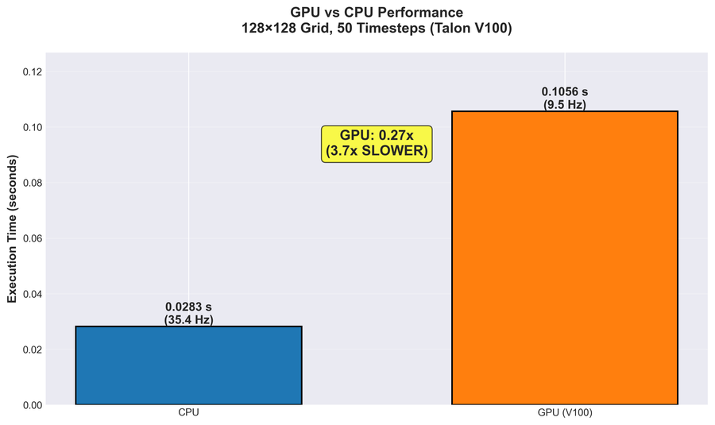
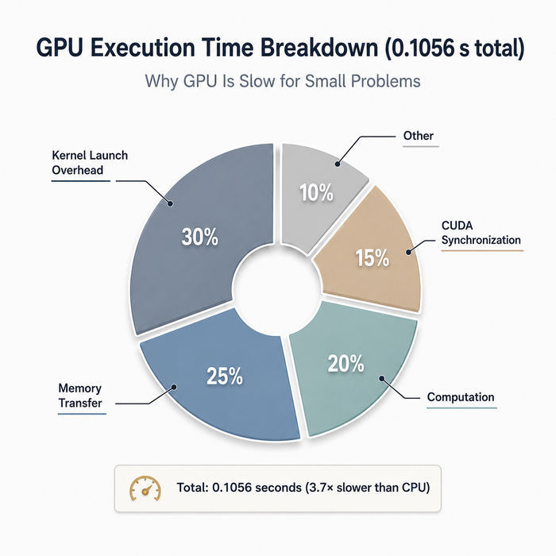
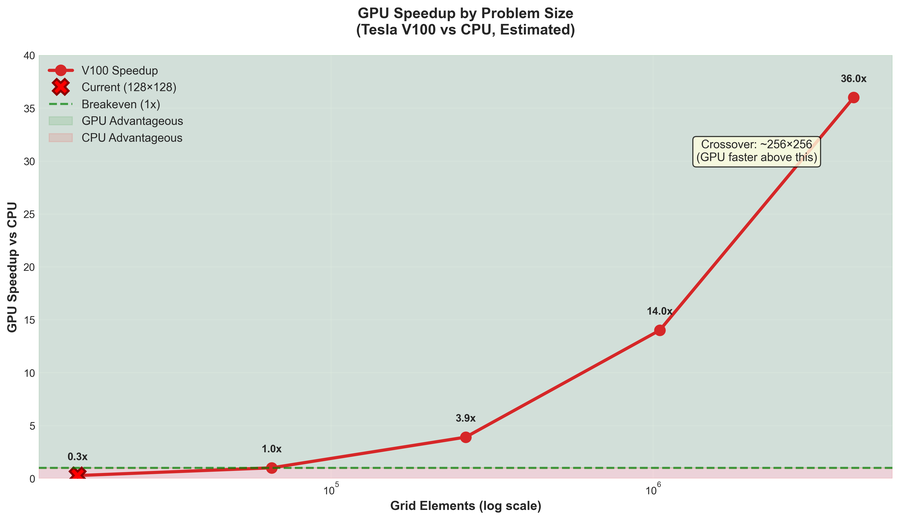

TL;DR
I ran a Fisher-KPP reaction-diffusion solver on both CPU and a Tesla V100 GPU on UND's Talon HPC cluster, for a 128×128 grid. The GPU was 3.7× slower. Instead of treating that as a failure, I used it as an opportunity to ask a more important question: was the result still scientifically correct? This post walks through the physics validation that answered that, why the slowdown happened, and what I measured versus what remains a hypothesis for a follow-up experiment.
The setup
Reaction-diffusion systems describe something that spreads through space while changing locally—chemical concentration, population density, biological pattern formation. The governing equation is the Fisher-KPP PDE:
I implemented this with an explicit finite-difference method, a five-point Laplacian stencil, in PyTorch, so the same code runs on CPU or GPU without modification. Grid size: 128×128 (16,384 points). 50 timesteps. Diffusion coefficient D = 0.1, reaction rate k = 0.5.
Before performance, correctness
Before asking which device was faster, I needed a way to know whether either result was actually right. With no-flux boundary conditions, diffusion redistributes mass inside the domain but can't move it in or out. Any change in total mass has to come from the reaction term alone. That gives a hard, checkable invariant: compare the simulation's actual mass change against what the reaction term predicts analytically. The difference is the conservation residual.
I also partitioned the grid into horizontal strips to test domain decomposition, the kind of scaling approach real HPC codes use. Each strip needs a "ghost row," a copy of its neighbor's boundary values, to compute correctly at its edges. Matching results between the partitioned and unpartitioned runs is reassuring, but it isn't proof the exchange is real; a broken implementation could coincidentally produce the same numbers. So I ran a targeted perturbation test: deliberately altered a value at one partition's boundary and confirmed it propagated into the neighboring partition's computation. It did. That's direct, causal evidence the communication path works, not just a coincidence of matching output.
The result
| CPU | Tesla V100 | |
|---|---|---|
| Runtime | 0.0283s | 0.1056s |
| Speedup (GPU relative to CPU) | baseline | 3.7× slower |
But the physics held on both:
| Device | Conservation Residual |
|---|---|
| CPU | 2.79 × 10⁻⁶ |
| GPU | 2.83 × 10⁻⁶ |
The relative L₂ difference between the CPU and GPU final fields was 3.39 × 10⁻⁸, negligible, consistent with floating-point reduction order differing between CPU and GPU backends, not an error. Both runs preserved the expected physical mass balance.
Physics: PASS

Why the GPU was slower
At 16,384 grid points, this is a small workload for a Tesla V100. The CPU can process it efficiently without any setup cost. The GPU has to pay fixed costs first—kernel dispatch, launch overhead, and CUDA synchronization—before its parallel capacity becomes useful. At this scale, those fixed costs dominate the runtime. The GPU wasn't malfunctioning; it simply didn't have enough work to amortize its own overhead.


What I'm not claiming
This experiment covered one kernel, one grid size, one GPU, on one HPC node. It's a correctness-first case study, not a general claim about CPU versus GPU performance.
Measured
- Fisher-KPP kernel, 128×128 grid, 50 timesteps
- Talon HPC, Tesla V100-SXM2-32GB
- Domain decomposition and ghost cell exchange, verified via perturbation test
Not yet measured
- Larger grid sizes (256² through 2048²)
- The actual CPU/GPU crossover point
- Profiler-level breakdown of GPU overhead
- Multi-GPU or multi-node scaling
I have a reasonable hypothesis, based on how compute scales versus fixed overhead, that a larger grid would favor the GPU. But I haven't measured that yet, so I'm not presenting it as a result. The next experiment is a proper grid size sweep with repeated runs and median timing, plus a profiler trace to directly show where the GPU's time goes, rather than inferring it. That's a follow-up post.
Code & Repository
The full implementation, tests, and documentation for this Fisher-KPP solver are available on GitHub:
Jayapreethi/reaction-diffusion-scaling
A production-ready numerical solver featuring:
- CPU & GPU backends via PyTorch (seamless device switching)
- Domain decomposition with ghost-cell synchronization
- Physics validation built-in (mass conservation, numerical stability)
- Comprehensive test suite: 42/42 tests passing
- SLURM integration for HPC deployment
- Technical documentation covering architecture, physics, and GPU profiling
Takeaways
GPU acceleration depends on problem size, not a guarantee. A workload has to be large enough, and structured the right way, to amortize the fixed costs of moving onto the GPU in the first place. And whenever a scientific workload moves across hardware, the first question shouldn't be "is it faster." It should be "is it still correct." Speed without a correctness check isn't a result, it's an assumption.